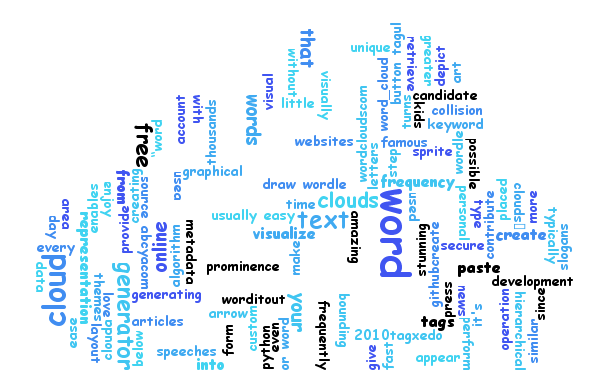

This program generates “word clouds” from the words that you provide using Google Search in the entire web. The clouds give greater prominence to words that appear more frequently in the query result.
Make your own word cloud. You can use generated image as you wish.
Please enter your words with whitespaces and press "submit".